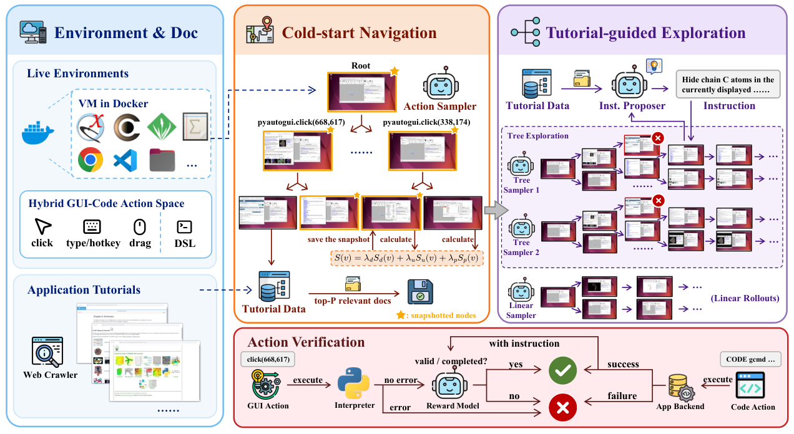

Lean 4 is one of the target desktop applications; agent trajectories are built by replaying compiled Lean reference proofs for ScienceBoard's ATP tasks.
Abstract
Computer-using agents are increasingly capable of performing complex tasks in the digital world. However, high-quality interaction trajectories remain scarce for specialized desktop applications, where limited application knowledge, cumbersome GUI workflows, and incomplete exploration hinder automated collection. We introduce OS-Wizard, an automated trajectory collection framework. It combines tutorial-guided exploration with a hybrid GUI–Code action space, providing application-specific knowledge and simplifying GUI workflows through direct execution of application-native commands. The framework also checkpoints and revisits pivotal states during tree exploration to explore alternative workflows, complementing linear rollouts for broader coverage. We collect 10.9K trajectories comprising 54.9K state–action samples. Fine-tuning open-source base models on this corpus yields a best-performing model that improves performance on a benchmark of specialized desktop workflows by 58.2 percentage points to 64.1%, surpassing reported human performance of 59.8% and establishing a new state of the art. The fine-tuned model also improves performance on general desktop workflows using GUI actions only, suggesting that the collected supervision benefits general desktop tasks as well. Comparative experiments and ablations demonstrate the efficiency of trajectory collection and the importance of code actions.
Problem
Computer-using agents lack high-quality interaction trajectories for specialized desktop applications such as ChimeraX, GRASS GIS, KAlgebra and Lean 4. Limited application knowledge, cumbersome GUI workflows and incomplete exploration make automated collection hard.
Approach
OS-Wizard collects trajectories using tutorial-guided exploration over a hybrid GUI–Code action space, in which code actions directly execute application-native commands or file edits. Tree exploration checkpoints scored pivotal states with VM snapshots and revisits them to explore alternative workflows. Independent linear rollouts complement the tree search. For Lean 4, file read/write adapters let the agent edit source files, and trajectories are built by replaying existing Lean proofs that passed pre-collection compilation checks, using linear rollouts only.

Figure 2: Overview of trajectory collection in OS-Wizard. Left: Tutorials guide exploration with GUI and code actions. Center: Cold-start navigation builds an initial tree and checkpoints pivotal states. Right: Parallel tree exploration and linear rollouts collect trajectories. Bottom: Execution checks and reward-model verification ensure trajectory quality.
Results
The framework collected 10.9K trajectories with 54.9K state–action samples, including 1,486 Lean 4 trajectories. A fine-tuned model reaches 64.1% on ScienceBoard, a gain of 58.2 points that exceeds the reported human score of 59.8%. On OSWorld with GUI-only actions, Qwen3.5-27B improves from 39.1% to 42.9%. Ablations show that code supervision and both collection strategies each contribute.